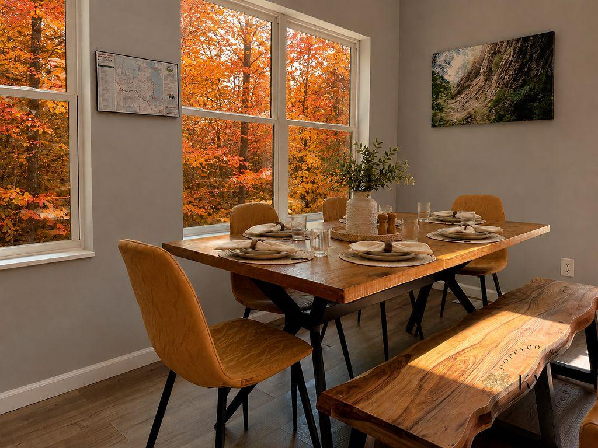
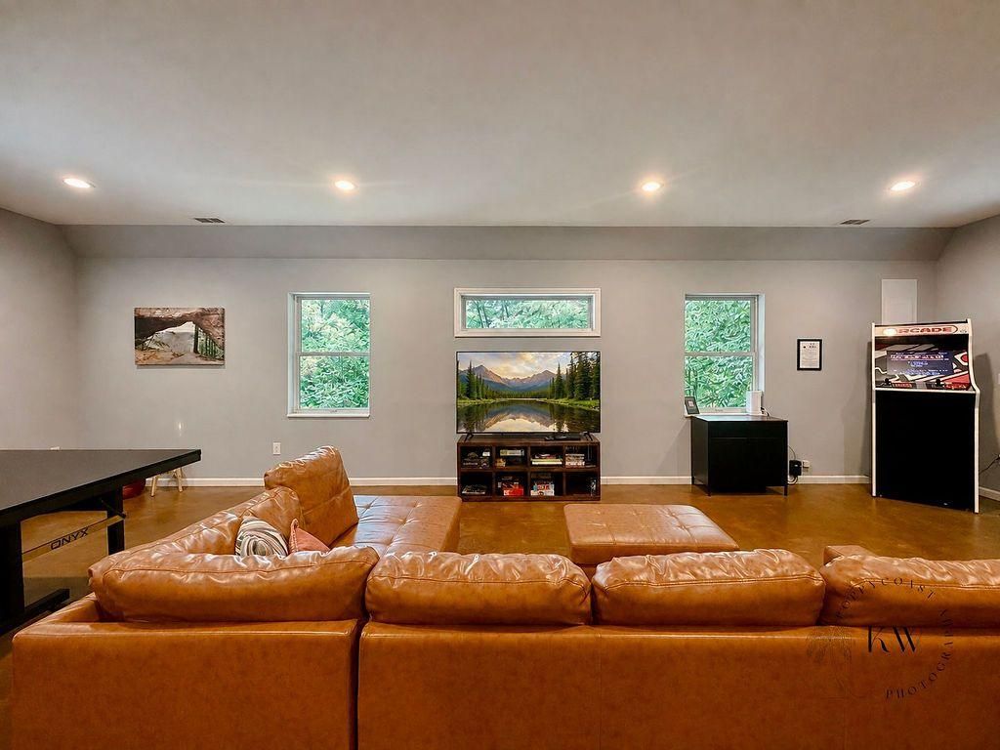
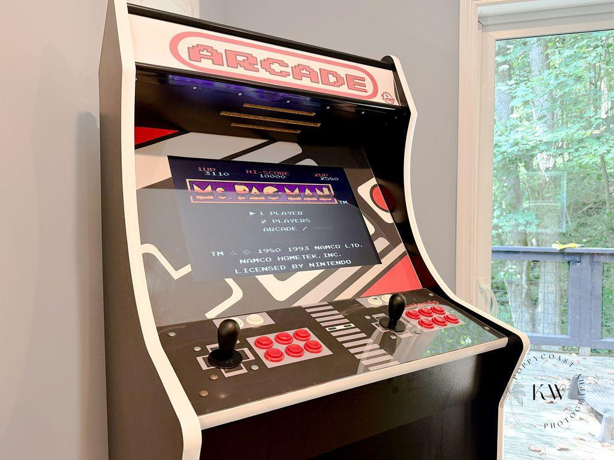
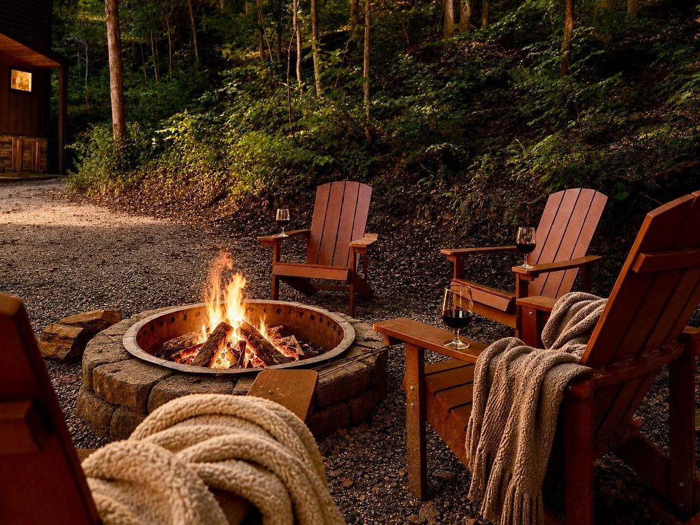
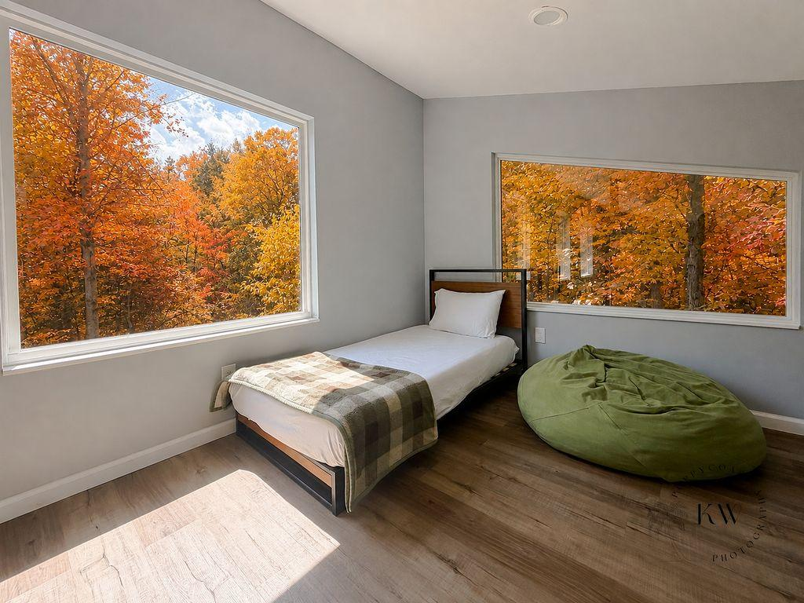
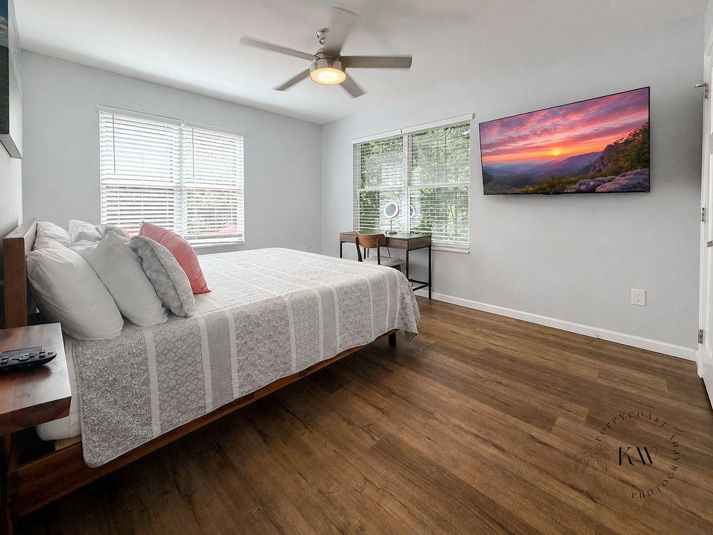
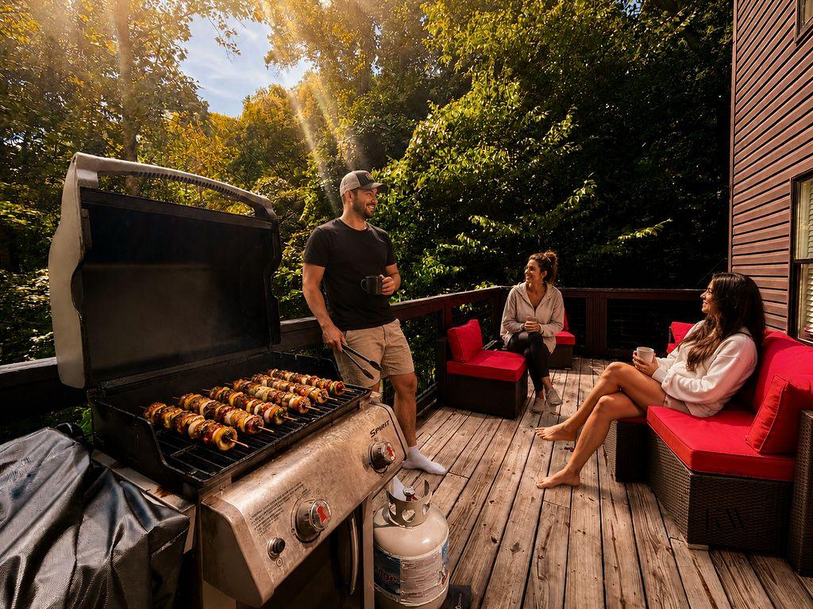
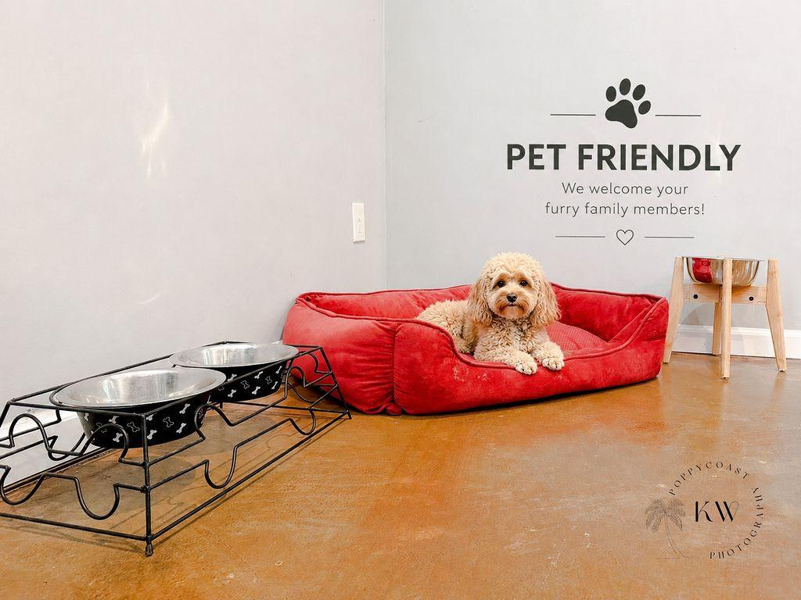
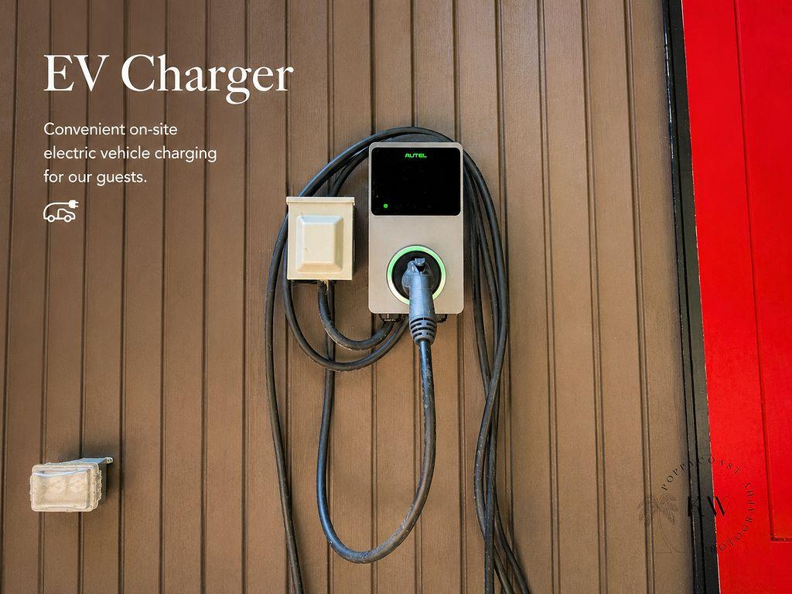
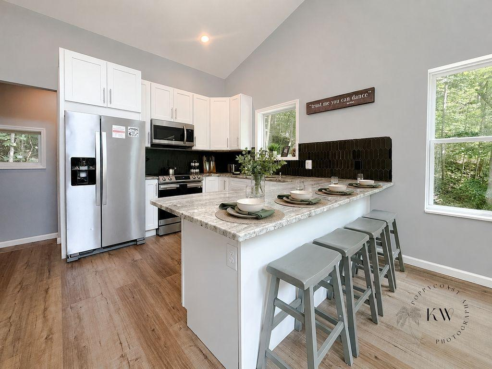

Home / Red River Gorge / Bootlegger's Retreat
STANTON · RED RIVER GORGE
Home / Red River Gorge / Bootlegger's Retreat
STANTON · RED RIVER GORGE
Three levels of cabin in the woods, about 10 minutes from Slade. A private hot tub deck, a downstairs game room with ping pong, foosball and a multicade arcade, and a fire pit for s'mores under the stars.
Good to know: 4WD or AWD recommended; required in ice or snow.











Birch Hollow, between Stanton and Slade
For your privacy and ours, the exact address and arrival directions are sent after you book.
Self check-in with a keypad. Your personal door code turns on at 3:00 pm on arrival day.
Put the hot tub cover on, lock the first-floor doors and take the trash to the bear box at the bottom of the driveway. Checkout is 10:00 am.
Yes. The hot tub deck is private to the cabin.
Yes. Up to 2 pets for $50 per pet per stay. The yard is not fenced, so please keep dogs leashed outside, and crate them if left alone inside.
The treehouse loft is reached by a ship ladder and has a lockable baby gate at the bottom.
AWD or 4WD is recommended in good weather and required in ice or snow. The driveway fits 3 cars single file.
Cancel at least 30 days before check-in for a full refund. Cancel 7 to 30 days before check-in and 50% of the nightly total is refunded. Cancellations less than 7 days before check-in are non-refundable.
“The house was great and worked well for our trip! We enjoyed the hot tub and making s'mores around the fire pit. Our youngest daughter loved sleeping in the loft.”
“Shane, the host, is very hospitable and proactive. We enjoyed our visit to his cabin. We loved the game room and spent much of our time together playing the games and listening to music.”
“The cabin was exactly as advertised and close to all the things to do in the area! We would stay here again and the games/ping pong table were used a lot!”
BOOK DIRECT PERK
Book on our site and get a complimentary early check-in or late checkout, up to 2 hours, when available. Same homes, same hosts, no booking-site service fee.